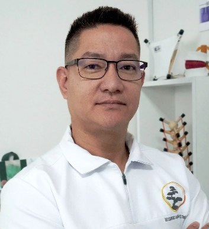

Uma abordagem clínica individualizada, integrando quiropraxia, acupuntura e massoterapia clínica para auxiliar no alívio da dor, na recuperação da mobilidade e na melhora da função musculoesquelética.
Mais de 100 técnicas terapêuticas integradas em uma abordagem clínica personalizada.
Atendimento particular · Segunda a sexta, das 8h às 19h · Clínica Hishinuma de Terapias
Toque na região do corpo ou escolha na lista para ver as principais condições que atendemos.
Ilustração esquemática
A indicação terapêutica depende da avaliação individual, da condição clínica e da identificação de possíveis contraindicações.
Cada paciente apresenta características clínicas, funcionais e biomecânicas diferentes. Por isso, nossos atendimentos não seguem um protocolo único de tratamento.
A partir da avaliação clínica e funcional, selecionamos e associamos as técnicas terapêuticas mais adequadas para cada condição.
Agendar minha avaliaçãoVocê não precisa escolher uma técnica antes. Os recursos são selecionados pelo profissional conforme os achados da avaliação e as necessidades do seu caso.
Investigação do histórico de saúde e da dor, das condições preexistentes, dos tratamentos já realizados e das principais queixas.
Avaliação da mobilidade, palpação das estruturas musculoesqueléticas, testes funcionais e análise dos fatores relacionados à queixa.
Seleção individualizada das técnicas e dos recursos terapêuticos mais adequados.
Aplicação das técnicas selecionadas, respeitando as condições clínicas e os limites individuais de cada paciente.
Orientações complementares e definição da necessidade de acompanhamento terapêutico.
No WhatsApp, perguntamos com quem você prefere ser atendido e vemos os horários.
R$ 350 por sessão
R$ 260 na primeira sessão · R$ 215 nas demais
“Recomendo sempre! É saúde e bem estar! Já nos ajudou muito 🙏”
Avaliação no Google“Boa infraestrutura com ótimos profissionais, super atenciosos!”
Avaliação no Google“Atendimento maravilhoso, muito atenciosos”
Avaliação no Google“Profissionais qualificados!”
Avaliação no GoogleSe você já tem exames relacionados à sua queixa, traga na consulta. Eles ajudam a compreender o histórico clínico e a planejar o tratamento.
Não é obrigatório ter exames de imagem para a avaliação inicial, salvo quando houver indicação clínica específica.
Atendemos a partir do quarto mês de gestação, desde que não seja uma gestação de risco, mediante avaliação individual e liberação obstétrica quando necessária.
As técnicas são selecionadas e adaptadas de acordo com o período gestacional e as condições clínicas da paciente.
Por protocolo de segurança da clínica, não realizamos terapias manuais em pacientes em tratamento oncológico ativo.
Outras condições clínicas podem exigir adaptações terapêuticas, autorização médica ou encaminhamento para avaliação especializada. Pacientes com sinais de alerta são orientados antes de qualquer procedimento.
Não. Você não precisa escolher uma técnica antes. Os recursos são selecionados pelo profissional conforme os achados da avaliação e as necessidades do seu caso.
De 45 a 60 minutos, incluindo a avaliação e o tratamento, quando indicado.
Não é obrigatório ter exames de imagem para a avaliação inicial, salvo quando houver indicação clínica específica. Se você já tem exames ou laudos relacionados à sua queixa, traga: eles ajudam a compreender o histórico e a planejar o tratamento.
Para a avaliação inicial, não. Algumas condições clínicas podem exigir adaptações, autorização médica ou encaminhamento para avaliação especializada, e nesses casos você será orientado.
Sim, a partir do quarto mês de gestação, desde que não seja uma gestação de risco, mediante avaliação individual e liberação obstétrica quando necessária. As técnicas são adaptadas ao período gestacional.
Atendemos pacientes com sintomas associados a hérnias e protrusões discais. A indicação depende da avaliação individual e da identificação de possíveis contraindicações. Se tiver exames, traga na consulta.
Depende da avaliação e da evolução clínica de cada paciente. Depois da primeira consulta, você recebe a orientação sobre a necessidade de acompanhamento.
Sim. A consulta e o tratamento acontecem na mesma sessão, quando o tratamento é indicado após a avaliação.
Por protocolo de segurança da clínica, não realizamos terapias manuais em pacientes em tratamento oncológico ativo, nem em gestantes antes do quarto mês ou com gestação de risco. Outras condições são analisadas individualmente na avaliação.
Pelo WhatsApp. Conte o que está sentindo, escolha com quem prefere ser atendido e veja os horários disponíveis.
Conheça nossa abordagem clínica individualizada e descubra quais recursos terapêuticos podem auxiliar na recuperação da sua funcionalidade.
Clínica Hishinuma de Terapias · Rua Dr. Pedro Zimmermann, 2480, sala 17 · Itoupavazinha · Blumenau/SC
Urgências aos sábados e domingos, conforme disponibilidade.
Ver no Google Maps